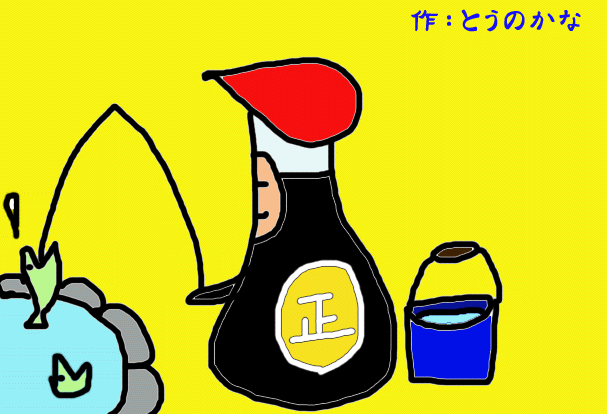
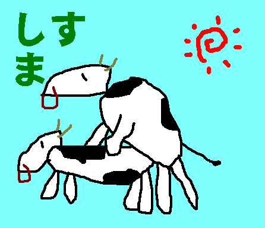

当ＨＰは完全リンクフリーです。
概要：
とつげき東北著『科学する麻雀』講談社現代新書の著者略歴より。
『
とつげき東北（とつげきとうほく）
1976年兵庫県生まれ。2001年、東北大学工学部通信工学科卒業。02年、北陸先端科学技術大学院大学情報科学研究科中退。
大学在学中の99年にインターネット麻雀「東風荘」でデビューするや圧倒的な実力を発揮し、同年「システマティック麻雀研究所」をウェブ上に立ち上げ科学的な麻雀を説く。
厖大なデータ収集と緻密な解析にもとづく理論は次々と従来の定説を塗り替え、ネット雀士のカリスマ的存在となる。現在は国家公務員として中央官庁に勤務 。
』
現在：（２００５年１月）
国家公務員。麻雀理論研究家（自称）。28歳。東京都在住。
麻雀理論研究家としての「とつげき東北」：
略歴：
１９９３年、麻雀と出会う。覚えたてであるにもかかわらず、２０秒間無敗の記録を誇る。
家麻雀、セット麻雀、フリー麻雀等を経験した後、インターネットマージャン「東風荘」に１９９９年４月２日より出没。
以後、ネット麻雀（データ取り麻雀）の虜に。
１９９９年、システマティック麻雀研究所をwebページ上に設立、数理的な麻雀研究をすすめる。
２０００年、近代麻雀の高梨くみ先生の漫画にメインで登場。
２００２年より、「近代麻雀」の福地先生のコーナーにデータ提供。
２００３年、月刊プロ麻雀誌上でプロと対局。負け(ﾉ_･､)。
２００４年、麻雀理論書『科学する麻雀』講談社現代新書を出版。
その他新聞・雑誌等で紹介。
主な出現ポイント：
第一東風荘 超ラン卓 （遊びでワイ卓で打つこともまれにある） たまにハンゲーム
ハンドルネーム：
とつげき東北 とつ開発研究（遊び・だべり専用） （ハンゲーム：とつげき東京）
普通の人（自称）としての「とつげき東北」：
特徴：
（他人からよく言われる評価）毒舌・大人・理論派・やさしい・オタク・頭いい←・出不精・最初の印象と違う（どんなんだ・・・）
身長174cm体重55kg。顔は…あんまいけてません←
人付き合いは得意だが、面倒くさがりなので友達を作らない。携帯電話とか、２週間に１回鳴れば多いほう。
とにかくやりたいことが多くて時間がたりない。もっと学問もやりたいし、麻雀研究もしたいし、本も読みたい。
「暇」ということがない。
好き：
男：
現実的な人。夢を語るのではなく、目標に向かって努力しかつ確実に進む人。
知的で温厚な人。
能力を感じさせる人。
無駄なことに執念を燃やして取り組み結果を出す人。
どうでもいいことをどうでもいいと割り切れる人。
理想の女性：
私の「尊敬できる部分」を尊敬してくれる人。遊んでない人。一途な人。
美人というよりもかわいくて、大事にしてくれて、甘え上手で、よしよしってしてくれて（略）
ゲーム：
スト２、ぷよぷよ、麻雀。
その他：
うまいものを食べること（ラーメンや焼肉）。
たくさん寝ること。
家にこもって趣味に没頭すること（プログラミング、麻雀研究、文章の記述）。
まったりといちゃいちゃすること。
嫌い：
人：
他人の出した優れた結果を認めない人。
なにもできずに「自分も頑張ればできる」などと思っている人。
理論上どうでもいいことに無駄にこだわるうるさい人（例：道徳にうるさい人）。バカなくせに語る人。
ギャグセンスが悪い人。
いじわるな人。
※結局のところ、知的な意味で筋悪な人。
普段：
ドラマ全般。マスコミの報道。
頻繁な外出。

DRYMEN作。シスマのイメージ画像（DRYMENは飛行機事故で死ぬべき）